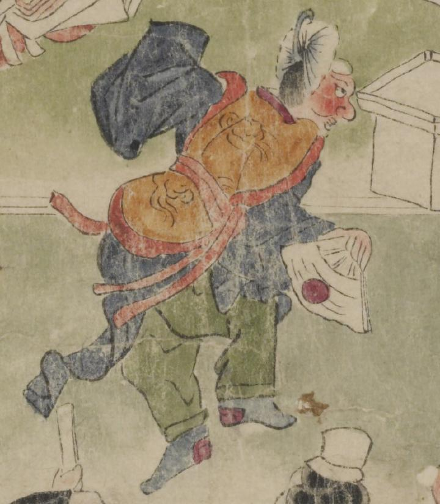

舞を舞う鬼。冠と老懸を付け、髪は後ろでまとめている。顔は赤く、鼻が大きい。橙色の裲襠、紺色の上着、緑色の袴、紺色の下沓といった舞人の装束を着け、右手に日の丸の入った扇を持って、舞っている。
著作者：坂本弥一郎徳定／出典：親書誌：U426_nichibunken_0080：伊吹山酒呑童子絵巻；イブキヤマシュテンドウジエマキ／日付：2007／資源識別子：U426_nichibunken_0080_0005_0001
Copyright (c)2010- International Research Center for Japanese Studies, Kyoto, Japan. All rights reserved.